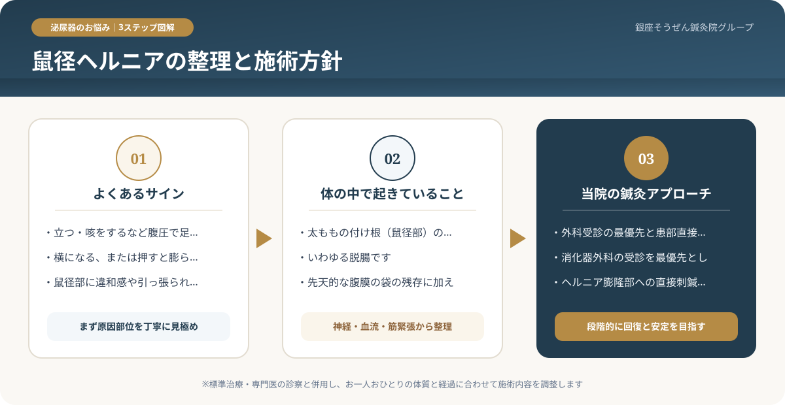
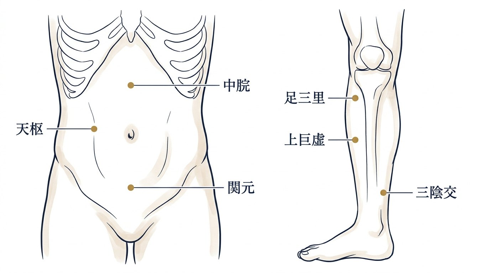

鼠径ヘルニアの鍼灸
根本治療は外科手術で、嵌頓時は緊急受診が必須です。患部への直接刺鍼は行わず、術後や安定期の便秘・体質ケアを支えます。
まず知っておきたい要点と改善の流れ

太ももの付け根（鼠径部）の腹壁の隙間から腸や脂肪が飛び出す、いわゆる脱腸です。先天的な腹膜の袋の残存に加え、加齢による腹壁の筋力低下や、立ち仕事・力仕事・慢性的な咳・便秘・排尿障害・妊娠などによる腹圧上昇が原因となります。膨らみが押しても戻らず強い痛みや嘔吐を伴う「嵌頓（かんとん）」は腸閉塞や腸壊死の危険があり緊急手術が必須です。成人の根本治療はメッシュ補強などの外科手術となります。
このようなお悩みはありませんか？
- ✓立つ・咳をするなど腹圧で足の付け根が膨らむ
- ✓横になる、または押すと膨らみが引っ込む
- ✓鼠径部に違和感や引っ張られる感じがある
- ✓便秘や咳など腹圧がかかりやすい体質を改善したい
当院の施術アプローチ・改善の流れ
なぜ鍼灸で改善へ向かうのか？（作用機序の図解）
鼠径ヘルニアに対する鍼灸は、仙髄排尿反射（陰部神経）と骨盤底の協調調整機序を通じて、お体本来の回復力を引き出します。

膀胱・尿道括約筋を支配する仙髄神経（S2〜S4）領域の経穴へ的確にアプローチします。
弱まった骨盤底筋の収縮サポートと、過敏になった膀胱排尿筋の鎮静をバランスよく促します。
腰殿部と下腹部の血流を高め、冷えや過緊張による頻尿・違和感・痛みを和らげます。
泌尿器科の評価やセルフエクササイズと併用し、安心して外出できる日常の回復を支えます。
院長YouTube解説・関連動画
ツボの位置と押し方
身柱の場所は、第３胸椎棘突起の下です。首の付け根の隆起から３つ下の隆起のすぐ下にあるツボです。
押すときは、ツボにゴルフボールなどを当てて体重をかける方法がお勧めです。
商丘は、足の内くるぶしの前方や少し下のくぼみにあります。
商丘は左右両方にあるため、両方を押します。ただし、左右のツボを見た時、左右で腫れている方を重点的に押します。両方のツボを刺激します｡ 約3～5分間押し、止めるという動作を繰り返しましょう。
箕門は太ももの内側にあるツボです。太ももの内側のほとんど中央の部分にあります。膝のお皿の上角から親指以外の指の4本の幅2回分と、人差し指から薬指までの指3本分の場所で、かすかに拍動を感じる場所を探しましょう。
押すときは、親指を重ねて押します。約5秒間かけてツボを押し、離す動作を10回ほど繰り返します。
潰瘍性大腸炎・クローン病（IBD）の腸管自律神経ツボ図解
実際の施術ではお一人おひとりの体質・症状に合わせて選穴しますが、炎症性腸疾患（潰瘍性大腸炎・クローン病）・過敏性腸症候群の併用ケアの臨床でよく用いられる代表的なツボの目安です。

📌 代表的なツボの詳細一覧表を開く（6穴） ▼
| ツボ名 | 位置の目安 | 主な狙い | セルフケアの注意点 |
|---|---|---|---|
| 中脘（ちゅうかん） | みぞおちとおへその中間 | 胃腸の蠕動バランス・食後の張り軽減 | 腹痛が強い活動期は押さず温めるだけにします。 |
| 天枢（てんすう） | おへその左右それぞれ指3本分外側 | 大腸の運動調整・下痢や腹鳴の緩和 | 腹部に強い圧痛がある場合は遠隔穴を優先します。 |
| 関元（かんげん） | おへそから指4本分下 | 下腹部の冷え改善・迷走神経を介した腸管鎮静 | 穏やかな温灸が特に相性の良いツボです。 |
| 足三里（あしさんり） | 膝の下外側、指4本分下 | 迷走神経抗炎症反射の活性化・栄養吸収サポート | 日常のセルフケアに最も安全な遠隔穴です。 |
| 上巨虚（じょうこきょ） | 足三里からさらに指4本分下 | 大腸の「下合穴」として腸管機能と排便リズム調整 | すねの外側を優しく押してほぐします。 |
| 三陰交（さんいんこう） | 内くるぶしの上から指4本分上 | 自律神経・睡眠・ストレス性の腸過敏緩和 | 下痢が続く時期の冷え対策にも役立ちます。 |
国際査読論文の科学的エビデンス
国際的な医学データベース（PubMed・Cochrane等）で報告されている炎症性腸疾患（潰瘍性大腸炎・クローン病）・過敏性腸症候群の併用ケア領域の代表的な査読済み鍼灸研究をまとめています（標準治療との併用や研究上の限界を含めて正確に掲載）。
📚 査読論文データ・PubMed出典リンクを開く（4件） ▼
| 年・研究デザイン | 対象・規模 | 主な結果 | 限界・出典 |
|---|---|---|---|
| 2017年 大規模多施設RCT | 腹圧性尿失禁女性 504名（12病院・腰仙部電鍼） | 6週時の1時間パッド尿漏れ量は電鍼-9.9g vs シャム-2.6g（差7.4g, P<0.001）、30週まで失禁減少持続。 | 30週以降の長期持続は今後の検証課題。 JAMA (PMID: 28655016) |
| 2021年 大規模多施設RCT | 慢性前立腺炎/CPPS男性 440名（10病院） | 8週時のレスポンダー率60.6% vs シャム36.8%（OR 2.6, P<0.001）、32週時点でも61.5% vs 38.3%持続。 | 細菌性前立腺炎・悪性疾患の除外が前提。 Ann Intern Med (PMID: 34399062) |
| 2022年 Cochraneレビュー | 過活動膀胱 15研究（n=1,395） | 薬物比較で症状改善率RR 1.25・軽度有害事象減少（RR 0.34）・夜間頻尿減少。重篤な有害事象なし。 | シャム比較では不確実、GRADE低〜非常に低。 Cochrane (PMID: 36148895) |
| 2023年 メタ解析 | 過活動膀胱 30研究統合 | シャム比較でOABSS有意改善（MD -1.13, P=0.01）、薬物併用でOABSS MD -2.28（P<0.00001）。 | 異質性が高く（I²=67〜94%）、GRADE低〜非常に低。 Front Neurol (PMID: 36712423) |
参考文献・出典
- 2017年 大規模多施設RCT（腹圧性尿失禁女性 504名（12病院・腰仙部電鍼））— JAMA (PMID: 28655016)
- 2021年 大規模多施設RCT（慢性前立腺炎/CPPS男性 440名（10病院））— Ann Intern Med (PMID: 34399062)
- 2022年 Cochraneレビュー（過活動膀胱 15研究（n=1,395））— Cochrane (PMID: 36148895)
- 2023年 メタ解析（過活動膀胱 30研究統合）— Front Neurol (PMID: 36712423)
よくある質問（FAQ）
Q. 鼠径ヘルニアの膨らみに直接鍼を打って治すことはできますか？▼
Q. 膨らみが戻らなくなり強い痛みや吐き気があります。どうすればよいですか？▼
あわせて読まれる関連疾患（泌尿器のお悩み）
陰のう内部に液体がたまり柔らかく腫れる状態です。泌尿器科での原因鑑別と手術適応評価を最優先に、安定期の体調管理を補完します。
単純ヘルペスウイルスによる性器の水疱・潰瘍と痛みを生じる感染症です。抗ウイルス薬治療が最優先で、水疱・急性期の患部施術は禁忌です。
肛門周囲に強いかゆみが生じる状態です。専門医での原因鑑別と正しい衛生管理を最優先に、太淵・肩髃・肝兪への鍼灸で皮膚と自律神経を整えます。
十分な勃起が得られない・保てない状態（ED）です。泌尿器科での基礎疾患精査や正規治療薬を基本に、自律神経と血流面を鍼灸で補完します。
腎臓から尿道までの尿路に結石ができる病気です。激痛発作や発熱・水腎症合併時は救急・泌尿器科を最優先に、安定期の巡りケアを補完します。
尿の結晶が尿管に詰まり激しい痛みを起こす状態です。激痛発作や発熱・水腎症合併時は救急・泌尿器科が最優先で、安定期に補完ケアを行います。
CLINICAL RECOVERY CASES
✨ 実際の臨床改善事例・回復経過を見る
銀座本院をはじめ各院での実際の改善事例を症状別に絞り込んでご確認いただけます。
おひとりで悩まず、まずはご相談ください
銀座本院・川口・大宮・横浜・博多・田無の各院でご予約を承っております。